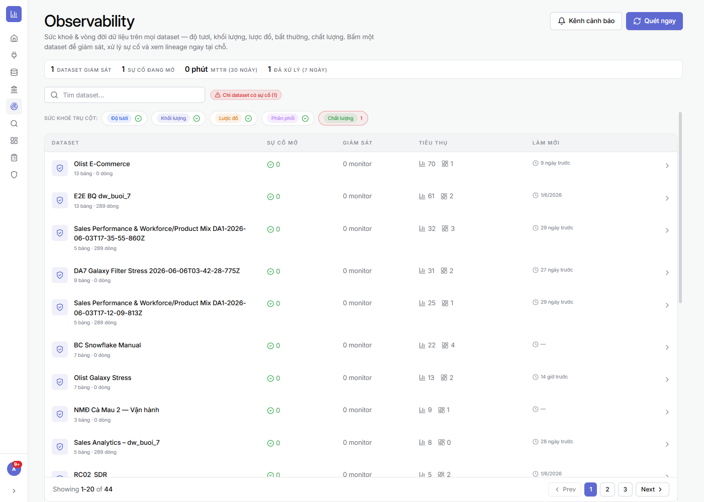

Ứng dụng vận hành
Mini-app cho người dùng cuối


Form nhập liệu trên điện thoại + OCR
Wizard, chụp ảnh phiếu AI tự điền, chạy offline, cài như app.
Cách làm →
Nhật ký hiện trường — Gallery ảnh
Bản ghi thành thẻ ảnh gom theo ngày/lô; chọn vùng trên bản đồ.
Cách làm →

Dữ liệu riêng theo từng người (RLS)
Mỗi người đăng nhập PIN chỉ thấy đúng phần dữ liệu của mình.
Cách làm →